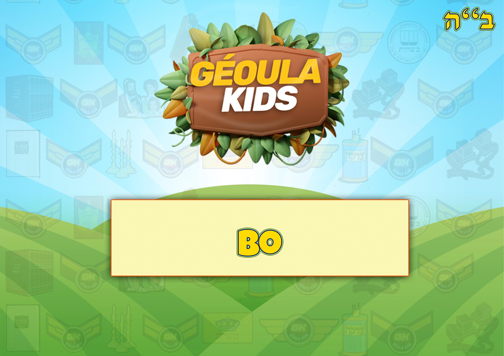

Accueil
Missions Géoulatik
Tirages passés
Tirages à venir
Jeux par Séfér
Béréchit
Chémot
Vayikra
Bamidbar
Dévarim
Feuillets Hébdomadaires
Béréchit
Chémot
Vayikra
Bamidbar
Dévarim
Les Histoires de Moré Yoni
Le Baal Chem Tov
Le Maguid de Mézéritch
Le Noam Élimélé'h
Rabbi Zoucha de Anipoly
Rabbi Yaacov Yosséf
Activités
Fêtes
Learn & Kiff
Mon compte
La Paracha de Chemot
La Paracha de Vaéra
La Paracha de Bo

La Paracha de Beshalach
La Paracha de Yitro
La Paracha de Mishpatim
La Paracha de Terumah
La Paracha de Tetsavé
La Paracha de Ki-Tissa
La Paracha de Vayakhel
La Paracha de Pekoudei